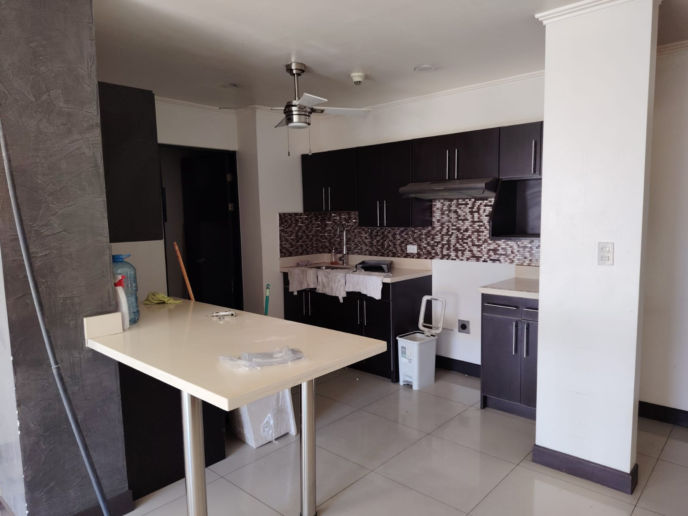
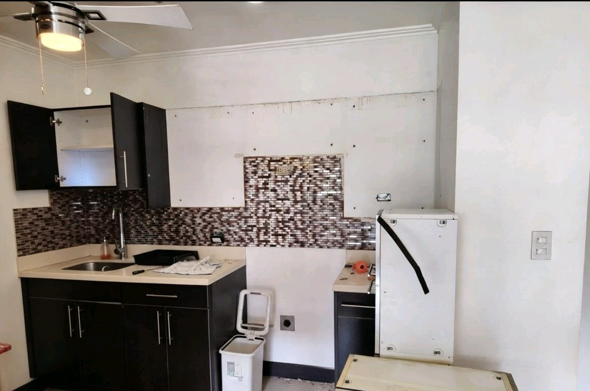
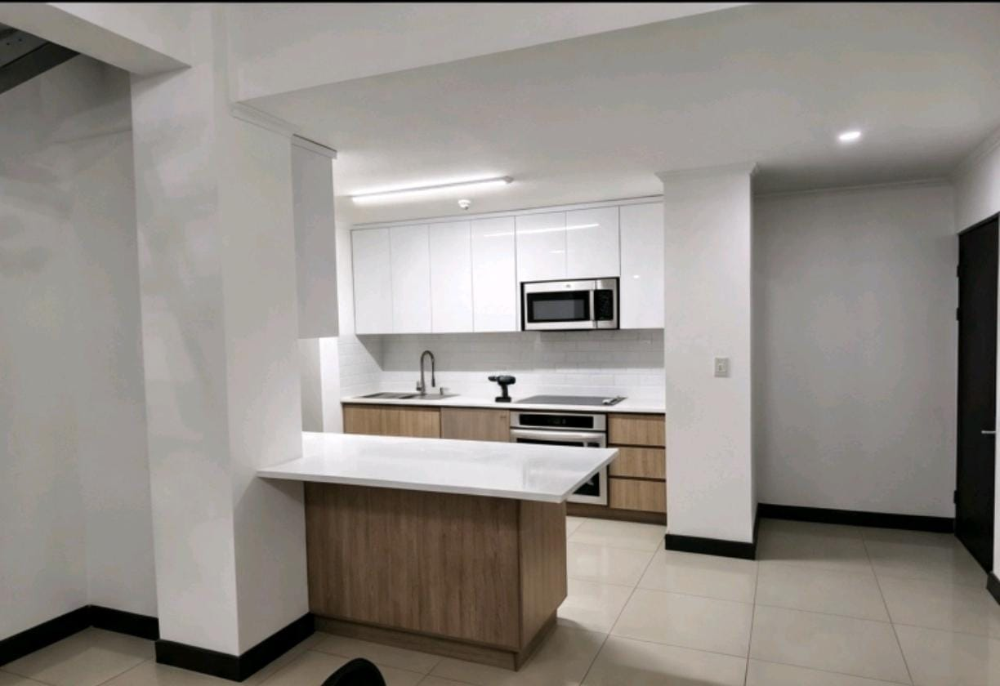

Obra nueva, ampliaciones, estructura metálica y acabados. Un solo equipo de principio a fin — usted no anda buscando cinco contratistas distintos.
Portones, escaleras, pasamanos y estructuras de acero.
Ampliaciones, segundas plantas y obra gris.
Baños, cocinas y oficinas: demolición y acabado final.
Interior y exterior, residencial y comercial.
Enchapes, porcelanato, cielos rasos y detalles finos.
Estructura y lámina a la medida, cambio o reparación.


